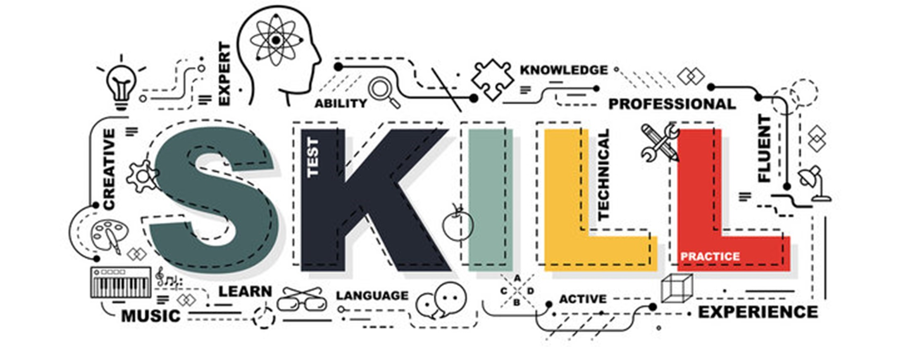

Skills
COMPUTER NETWORK
I'm learning how to design, secure and troubleshoot computer networks and internet connections. The technical environments I work with are Cisco and Aruba for routers and switches, and Linux and Windows for computers and servers.
CYBERSECURITY
I obtained the “SecNumacadémie” certificate with a score of 100%. This certificate is delivered by ANSSI, the French national agency for information systems security.
PROGRAMMING
I've been programming regularly in python for over 4 years, and I started with html and css 5 years ago. You can find these projects on my GitHub profile.
- My biggest web project (html/css) is the portfolio you see now.
- I've worked on a lot of projects in python, such as a “connect 4” online multiplayer game, a steganography program, and programs used to process and visualise thousands of lines of data, using the “matplotlib” module.
OPERATING SYSTEMS
For over a year, I wrote tutorials on a voluntary basis for thousands of Windows and macOS users who were having trouble connecting to a video game. Want to find out more about this story? Go to the Interests page!
TELECOMMUNICATIONS
I study several signal transmission media and networks (copper, air, optical fiber). I also have the ability to solder optical fibers together.
DATABASES
Data processing using MySQL and python.
TELEPHONY
At the moment, I know the basic principles of Voice over IP (VoIP), but I'm going to learn a lot more in this area over the coming months.
PROJECT MANAGEMENT
I managed a team of remote IT volunteers for almost a year.
For project planning, I also know how to use Trello and Gannt diagrams.
SCIENCE AND COMPUTING IN GENERAL
I hold a French general 'baccalauréat' with perfect scores of 20/20 in computer science and mathematics.
I also obtained PIX certification with a score of 720/780, which is used to assess our ability to use computers and the Internet and to stay safe online.
ENGLISH
I speak English every day, and I've been to England twice. As I learnt English in school, the French Ministry of Education has certified in 2023 my level of English as follows:
Written comprehension | C1 |
Written expression | C1 |
Oral comprehension | C1 |
Oral expression | B2 |
SPANISH
In addition to English, I also learnt Spanish at school. The French Ministry of Education has certified in 2023 my level of Spanish as follows:
Written comprehension | B1 |
Written expression | A2 |
Oral comprehension | B1 |
Oral expression | A2 |
BRETON
At secondary school, for four years, I also took an option to learn the basics of Breton, the historic language of the region where I live, Brittany. In 2020, my overall certified level in Breton was A2.
